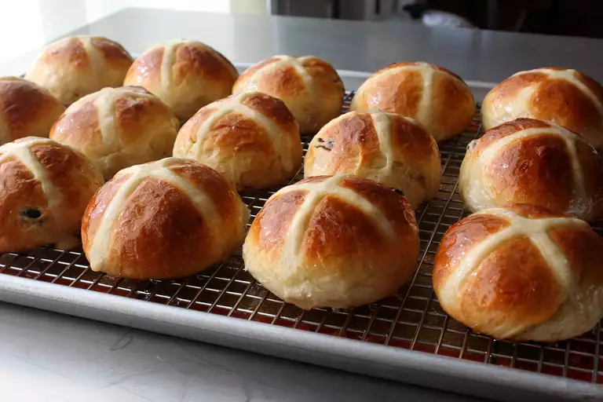

Chef John's Hot Cross buns

Real hot cross buns have the cross baked into them, not piped on afterward. These are studded with rum-soaked currants. I based my recipe on one I found on Anson Mills' website.
Ingredients
- ¼ cup rum, or as needed to cover currants
- ¼ cup dried currants
- ¾ cup milk, warmed to 100 degrees F (40 degrees)
- 3 cups bread flour, divided, or as needed
- 1 (.25 ounce) package active dry yeast
- 5 tablespoons white sugar
- 1 large egg, beaten
- 1 tablespoon grated lemon zest
- 1 tablespoon grated orange zest
- ¾ teaspoon ground cinnamon
- ½ teaspoon fine salt
- ½ teaspoon ground cardamom
- ¼ teaspoon ground nutmeg
- 7 tablespoons melted butter
- ⅓ cup all-purpose flour, or as needed to make thin, pipe-able dough
- ¼ cup water
Glaze
- ¼ cup sugar
- 3 tablespoons water
Directions
- Step 1:Make the dough: Heat rum in a small saucepan until steaming. Place currents into a small bowl and pour steaming rum over top; let sit for about 2 hours to soften. Drain; reserve liquid for another use.
- Step 2:Whisk warm milk, 1/4 cup bread flour, and yeast together in the bowl of a stand mixer. Let stand until small bubbles start to rise to the surface, about 15 minutes. Add sugar, beaten egg, lemon and orange zest, cinnamon, salt, cardamom, and nutmeg. Add melted butter, then spoon in most of the remaining bread flour (you might not need it all). Mix with a dough hook attachment until dough pulls away from the sides of the bowl and becomes slightly elastic, 5 or 6 minutes. Continue kneading until dough is soft and shiny, about 10 minutes. Remove dough from dough hook and shape into a ball. Transfer to a lightly floured work surface
- Step 3:Flatten dough into a large oval about 1/2-inch thick. Sprinkle strained currants evenly over the surface. Fold dough into thirds, then turn and fold into thirds again. Reshape dough into a round ball. Transfer to a lightly oiled mixing bowl. Cover and let rise in a relatively warm, draft-free place until doubled in volume, about 2 hours.
- Step 4Poke dough down a bit with your fingertips. Transfer to a lightly floured work surface and flatten out into an even shape. Divide into 16 equal pieces using a bench scraper. Roll each piece of dough into a round ball. Arrange evenly on a silicone-lined baking sheet. Let rise for 15 minutes.
- Step 5:Mix 1/3 cup all-purpose flour with 1/4 cup water in a mixing bowl until mixture is thick enough to hold its shape but thin enough to pipe. Transfer to a piping bag and pipe a cross on top of risen bun. Let rise until doubled in volume again, another 15 or 20 minutes.
- Step 6:Preheat the oven to 425 degrees F (220 degrees C).
- Step 7:Bake the buns in the preheated oven until golden brown, about 15 minutes.
- Step 8:Meanwhile, make the glaze: Bring sugar and water to a simmer over medium heat. Cook until sugar dissolves and mixture starts to thicken, or until it reaches a temperature of 225 degrees F (110 degrees C). Remove from the heat.
- Step 9:Let buns cool on a rack for 5 minutes before glazing. Brush glaze lightly over the tops of the buns.
Home